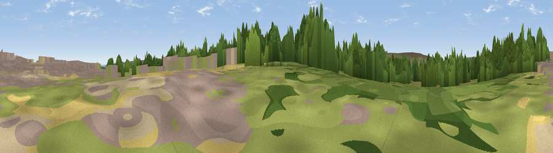

Viewpoint near Ugglebarnby
#5947 in England · top 18% of its area beats it · near UgglebarnbyThe view, rendered

A 360° render of this exact spot computed from the terrain model, tree cover and land cover — summer colours, afternoon light, calibrated against photographs of famous viewpoints. Real trees, hedges and buildings will differ in detail.
The panorama
Grey silhouette: terrain skyline in each direction (720 bearings, Earth curvature and refraction included). Dashed green: skyline with trees (+15 m) and buildings (+8 m) as obstacles. Blue strip: how far the ground is visible on each bearing.
Where the view opens
Wedge length = distance to the farthest visible ground on that bearing (vegetation-aware). Rings at 10, 25 and 50 km.
What fills the view
41% woodland · 39% grassland · 13% built-up · 3% cropland · 3% water · 1% bare ground
Angular shares of the visible panorama (visual magnitude), not map area. Landscape diversity 0.54 (0–1 Shannon).
Key numbers
More beautiful places nearby
The staircase of upgrades: each row has a higher view potential than everything closer. Driving times are estimates from straight-line distance, calibrated against real road routing — check an actual route before setting out.
| Place | Direction | Drive | Score |
|---|---|---|---|
| Flat Howe | W · 4 km | ~9 min | 76.4 |
| Viewpoint near Fylingthorpe | E · 4 km | ~9 min | 81.1 |
| Viewpoint near Fylingthorpe | ENE · 5 km | ~10 min | 82.3 |
| Viewpoint near Robin Hood's Bay | ENE · 5 km | ~12 min | 83.3 |
| Viewpoint near Ravenscar | ESE · 7 km | ~15 min | 90.0 |
| Viewpoint near Easington | NW · 21 km | ~36 min | 90.2 |
| The Knoll | SSW · 438 km | ~412 min | 91.0 |
54.43192, -0.62527 · source: screening · position refined by local search. Computed location — check access rights before visiting.